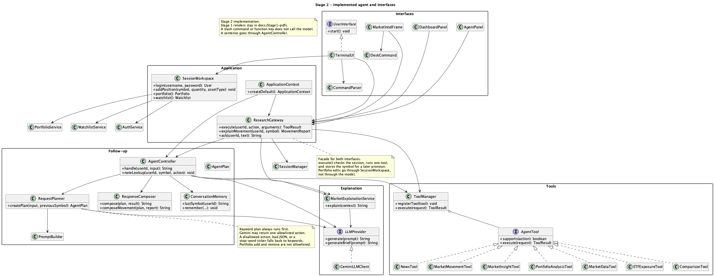
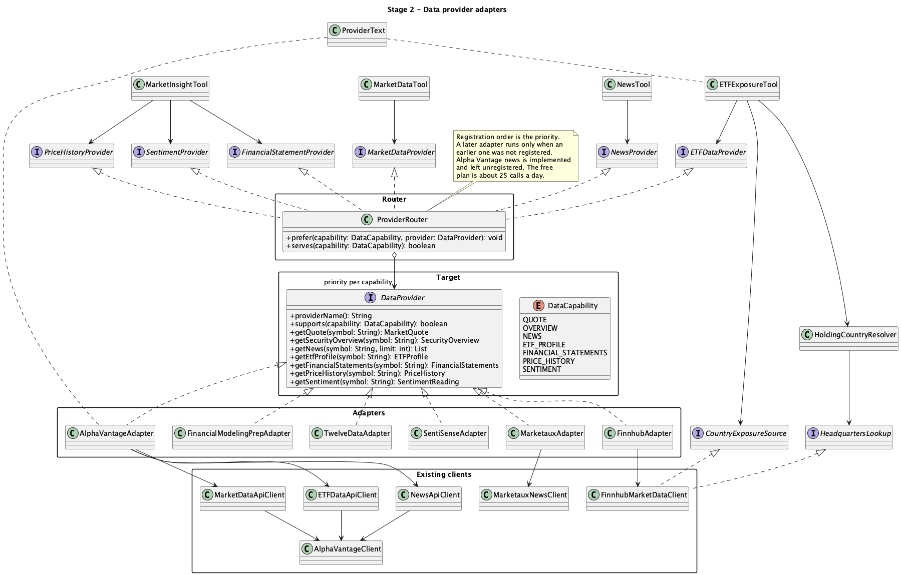
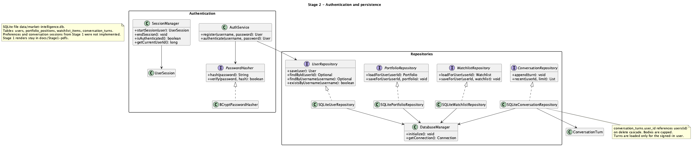
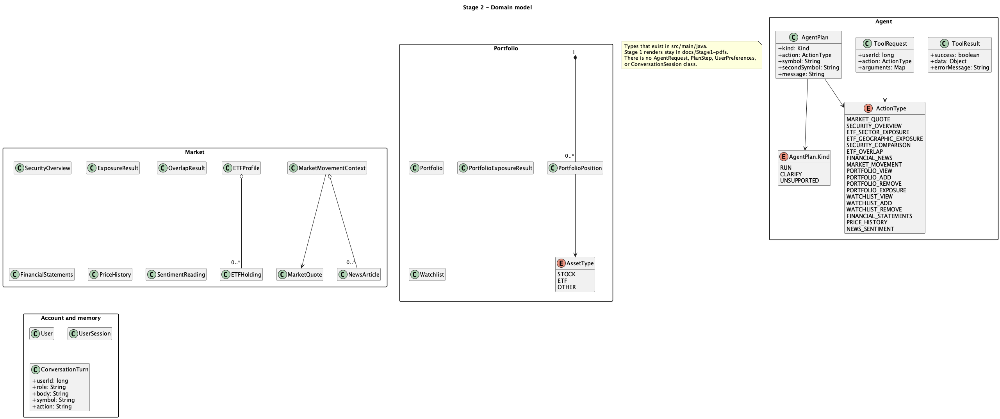
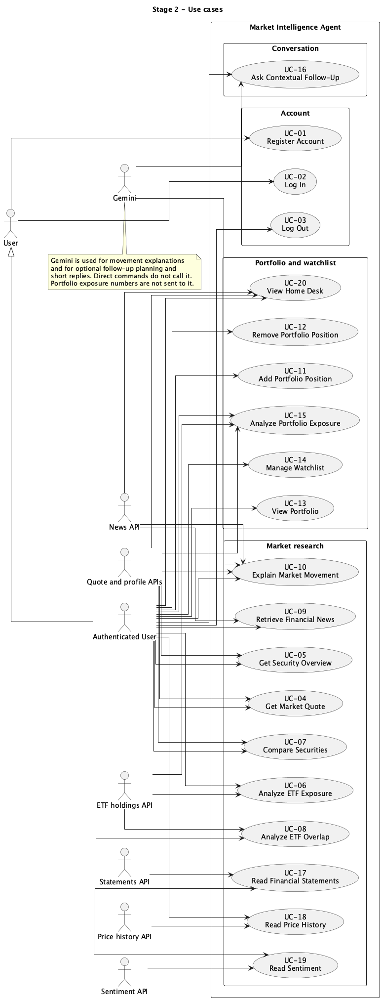

This report describes the application that is in the repository. It does not describe a design that has not been built. Demonstration videos are not recorded yet. That gap is stated in Section 7.
The Market Intelligence Agent is a research desk for a signed-in user. The same person can use a Swing window or a terminal. Both call one ResearchGateway. Accounts, portfolios, watchlists, and conversation turns are stored in data/market-intelligence.db (SQLite). The desk does not give investment advice. Every movement note and follow-up reply says so.
Market data comes from free provider plans. ProviderRouter picks the first adapter registered for a capability. A later adapter is used only when an earlier one was not registered. A failed call does not try the next adapter. Keys are environment variables. The process does not read a .env file by itself. .env.example has placeholders only.
Gemini participates in two places. MarketExplanationService writes a short note from a quote and up to three headlines. RequestPlanner may ask Gemini to name one allowlisted action for a sentence, and AgentController may ask it for a short reply from the tool result. A direct command such as QUOTE NVDA does not call the model. Portfolio weights are calculated in Java and are not sent to Gemini. If the model returns bad JSON, a disallowed action, or a word that is not a ticker, the keyword plan is used.
The default model is gemini-3.5-flash-lite. GEMINI_MODEL overrides it. Older names that were tried during development, gemini-3.8-flash and gemini-2.5-flash, either thought too long or returned HTTP 404 for a new key. Those names should stay unset.
XEQT.TO stays unpriced and is named.SessionWorkspace.Login, logout, and registration work, and they are listed because Stage 1 included them. They are not counted toward the ten meaningful features. The meaningful features are UC-04 through UC-20 except UC-01, UC-02, and UC-03.
| ID | Name | Stage 1 | Status | Kind |
|---|---|---|---|---|
| UC-01 | Register account | UC-01 | Implemented | Deterministic |
| UC-02 | Log in | UC-02 | Implemented | Deterministic |
| UC-03 | Log out | UC-03 | Implemented | Deterministic |
| UC-04 | Get market quote | UC-04 | Modified | Deterministic |
| UC-05 | Get security overview | UC-05 | Modified | Deterministic |
| UC-06 | Analyze ETF exposure | UC-06 | Modified | Deterministic |
| UC-07 | Compare securities | UC-07 | Modified | Deterministic |
| UC-08 | Analyze ETF overlap | UC-08 | Modified | Deterministic |
| UC-09 | Retrieve financial news | UC-09 | Modified | Deterministic |
| UC-10 | Explain market movement | UC-10 | Modified | Hybrid |
| UC-11 | Add portfolio position | UC-11 | Modified | Deterministic |
| UC-12 | Remove portfolio position | UC-12 | Modified | Deterministic |
| UC-13 | View portfolio | UC-13 | Implemented | Deterministic |
| UC-14 | Manage watchlist | UC-14 | Modified | Deterministic |
| UC-15 | Analyze portfolio exposure | UC-15 | Modified | Deterministic |
| UC-16 | Ask a contextual follow-up | UC-16 | Modified | Hybrid |
| UC-17 | Read financial statements | New | Implemented | Deterministic |
| UC-18 | Read price history | New | Implemented | Deterministic |
| UC-19 | Read sentiment | New | Implemented | Deterministic |
| UC-20 | View home desk | New | Implemented | Deterministic |
Video links are not available yet. Section 7 is the index to fill when the recordings are public.
Classes. AuthenticationPanel and TerminalUI collect the username and password. SessionWorkspace.register calls AuthService.register. BCryptPasswordHasher hashes the password. SQLiteUserRepository.save stores the user. The password is not copied into the status line.
Methods. AuthService.register, PasswordHasher.hash, UserRepository.save.
Patterns. Strategy (PasswordHasher), Repository, Factory (ApplicationContext wires them).
Path. The user submits the create-account form or the terminal register command. Validation rejects a short password or a taken username. A successful registration returns to the sign-on screen. The user still has to log in. Deterministic.
Classes. AuthenticationPanel or TerminalUI, AuthService.authenticate, SessionManager.startSession.
Methods. PasswordHasher.verify, UserRepository.findByUsername, SessionManager.startSession.
Patterns. Strategy, Repository.
Path. The sign-on screen has no confirm-password field. A match starts a session for that user id. A mismatch stays on the sign-on screen. Deterministic.
Classes. SessionWorkspace.logout, SessionManager.endSession.
Methods. endSession.
Patterns. Facade (SessionWorkspace).
Path. Logout clears the in-memory session. The next person must sign in. Conversation rows stay in SQLite under the previous user id. Deterministic.
Classes. DeskCommand or CommandParser, ResearchGateway, ToolManager, MarketDataTool, RequestValidator, ProviderRouter, FinnhubAdapter (then Twelve Data, then Alpha Vantage, only if an earlier adapter was not registered).
Methods. ResearchGateway.execute, MarketDataTool.execute, ProviderRouter.getQuote.
Patterns. Command, Facade, Composite, Adapter.
Path. QUOTE NVDA checks the session, validates the symbol, and asks the first quote adapter. The window or terminal shows last price, previous close, and percent change. A success stores NVDA as the last symbol for this user. Gemini is not called. Stage 1 sent this use case through the model. That was removed so a quote stays a lookup. See docs/uml/sequence-market-quote.puml.
Classes. Same gateway and MarketDataTool, using getSecurityOverview. Finnhub’s free profile supplies name, exchange, currency, and an industry label. It does not supply a company description. The screen says so.
Methods. MarketDataTool.execute, ProviderRouter.getSecurityOverview.
Patterns. Command, Facade, Composite, Adapter.
Path. OVERVIEW NVDA follows the quote path with a different action. Deterministic. An ETF often has no company profile. Portfolio exposure then values it from the quote currency and names that fact.
Classes. ETFExposureTool, ExposureCalculator, AlphaVantageAdapter for sector weights and holdings, FinnhubMarketDataClient as CountryExposureSource, HoldingCountryResolver, HeadquartersLookup.
Methods. ETFExposureTool.execute, calculateSectorExposure, calculateReportedCountryExposure, HoldingCountryResolver.apply, calculateGeographicExposure.
Patterns. Command, Adapter, Composite.
Path. SECTOR QQQ reads the ETF profile and sums the provider’s sector weights. GEO QQQ tries Finnhub’s published country report. On HTTP 403 it reads holdings and the headquarters country of at most 25 names. A holding with no profile is Unknown. Weight the provider left blank stays unassigned. A stock such as NVDA has no holdings list, so it has no country breakdown. Provider errors pass through ProviderText.redact. Deterministic. Stage 1 had the model explain the exposure. The implementation shows the calculated weights instead. See sequence-etf-analysis.puml and sequence-country-exposure.puml.
Classes. ComparisonTool, SecurityComparisonCalculator, ProviderRouter.
Methods. ComparisonTool.execute, SecurityComparisonCalculator difference of the two percent changes.
Patterns. Command, Composite, Adapter.
Path. COMPARE NVDA MSFT loads two quotes and reports the difference. It needs two symbols. A follow-up that names only one symbol asks for the second. Deterministic.
Classes. ComparisonTool, ExposureCalculator, AlphaVantageAdapter through the router.
Methods. ComparisonTool.execute, ExposureCalculator.calculateOverlap.
Patterns. Command, Adapter.
Path. OVERLAP QQQ SPY loads both holding lists and reports the shared names. Deterministic. Both symbols are required.
Classes. NewsTool, ProviderRouter, MarketauxAdapter when MARKETAUX_API_TOKEN is set, otherwise FinnhubAdapter company news. Alpha Vantage news exists and is not registered, because that free plan is about 25 calls a day.
Methods. NewsTool.execute, ProviderRouter.getNews.
Patterns. Command, Composite, Adapter.
Path. NEWS NVDA returns recent articles associated with the ticker. Association is not evidence that the article caused a price move. Deterministic.
Classes. MarketMovementTool gathers the quote and the news. NewsTiming marks articles published after the last trade when the quote has a trade time. MarketExplanationService.explain calls GeminiLLMClient.generateBrief. ResponseComposer.composeMovement and ResultFormatter present the evidence and the note. ResearchGateway.explainMovement is the direct command. AgentController.movement is the same evidence path when a sentence plans MARKET_MOVEMENT.
Methods. MarketMovementTool.execute, MarketExplanationService.explain, LLMProvider.generateBrief.
Patterns. Command, Adapter, Strategy (LLMProvider).
Path. WHY MSFT requires a quote provider and a news provider. The prompt contains the quote and short article text. It does not ask for a buy or sell decision. If Gemini is unset, times out, or returns an error, the quote and the news still appear with the failure note. Hybrid. See sequence-market-movement.puml.
Classes. PortfolioPanel or DeskCommand or TerminalUI, SessionWorkspace.addPosition, PortfolioService, SQLitePortfolioRepository.
Methods. PortfolioService.addPosition, PortfolioRepository.saveForUser.
Patterns. Command (DeskCommand), Repository, Facade.
Path. PORT ADD NVDA 10 STOCK checks the session and stores symbol, quantity, and STOCK, ETF, or OTHER for this user. Stage 1 exposed this as an agent tool the planner could call. The implementation keeps it off the allowlist so a sentence cannot change the portfolio. Deterministic.
Classes. SessionWorkspace.removePosition, PortfolioService, SQLitePortfolioRepository.
Methods. PortfolioService.removePosition, Portfolio.removePosition.
Patterns. Command, Repository.
Path. PORT REMOVE NVDA deletes that symbol for the signed-in user and reports whether it was present. Not allowlisted for the model. Deterministic.
Classes. PortfolioPanel, TerminalUI, SessionWorkspace.portfolio, PortfolioService.getPortfolio.
Methods. PortfolioRepository.loadForUser.
Patterns. Repository, Facade.
Path. /portfolio or the Portfolio screen lists the stored positions. No network call is required to list them. Prices appear when another feature quotes them. Deterministic.
Classes. WatchlistPanel, WatchlistService, SQLiteWatchlistRepository.
Methods. WatchlistService.addSymbol, removeSymbol, getWatchlist.
Patterns. Repository, Command.
Path. WATCH ADD NVDA stores a symbol for this user. Remove deletes it. The watchlist is not a portfolio and has no quantity. Stage 1 had a WatchlistTool on the agent. The implementation uses the session workspace, same as portfolio edits. Deterministic.
Classes. PortfolioAnalysisTool, PortfolioExposureCalculator, PortfolioBook for the home summary, ProviderRouter for quotes and ETF profiles.
Methods. PortfolioAnalysisTool.execute, PortfolioExposureCalculator.calculate, PortfolioBook value and day move.
Patterns. Command, Composite, Adapter.
Path. EXPOSURE loads the signed-in positions, quotes each one, and sets market value to price times quantity. Day move is (price − previous close) times quantity. Currencies stay in separate books. A position with no price is excluded and named. ETF sector weights are look-through when the holding list exists. AgentController skips Gemini for this action even when a sentence selects it. Deterministic. See sequence-portfolio-analysis.puml.
Classes. AgentPanel and TerminalUI send the sentence to ResearchGateway.ask. AgentController.handle reads ConversationMemory.lastSymbol, which reads SQLiteConversationRepository.recent for that user only. RequestPlanner.createPlan builds a keyword plan and, when Gemini is configured, may replace it with one allowlisted JSON action. ToolManager runs the action. ResponseComposer formats the tool result. A second generateBrief may prepend a short answer. Both turns are stored.
Methods. AgentController.handle, RequestPlanner.createPlan, ConversationMemory.remember, PromptBuilder.planPrompt, PromptBuilder.answerPrompt.
Patterns. Command, Strategy, Facade, Repository.
Path. why did microsoft fall stays a sentence. The keyword plan maps Microsoft to MSFT and “fall” to MARKET_MOVEMENT. The word “did” is a stop word, so it cannot become the ticker. Pronouns use the stored symbol. Compare and overlap still need two symbols. Injection-shaped text is rejected. Portfolio exposure is not narrated. Hybrid when Gemini is set. Keyword-only when it is not. See sequence-context-followup.puml.
Classes. MarketInsightTool, FinancialModelingPrepAdapter, ProviderRouter.
Methods. MarketInsightTool.execute, ProviderRouter.getFinancialStatements.
Patterns. Command, Adapter, Composite.
Path. STATEMENTS NVDA requests annual income, balance sheet, and cash flow. A line the filing omitted stays blank. Without FMP_API_KEY the action is unavailable. New in Stage 2. Deterministic. See sequence-market-insight.puml.
Classes. MarketInsightTool, TwelveDataAdapter.
Methods. ProviderRouter.getPriceHistory.
Patterns. Command, Adapter.
Path. HISTORY NVDA shows the newest daily bars and the latest 14-day RSI. Without TWELVE_DATA_API_KEY the action is unavailable. Quotes still work through Finnhub. New in Stage 2. Deterministic.
Classes. MarketInsightTool, SentiSenseAdapter, SentimentBands.
Methods. ProviderRouter.getSentiment, SentiSenseAdapter GET of the latest sentiment point.
Patterns. Command, Adapter.
Path. SENTIMENT NVDA shows the latest score from −1 to 1, the change from the previous point, and a local band label. The label is this desk’s wording for the score. It is not a recommendation. Marketaux article sentiment, when present, is separate and stays on the article. The paid SentiSense plan was not used. New in Stage 2. Deterministic.
Classes. DashboardPanel, PortfolioBook, TapeLine, BackgroundWork. The tape quotes a fixed set of index and large-cap symbols plus portfolio symbols, and it shows a few headlines.
Methods. DashboardPanel load of the book, TapeLine.format.
Patterns. Facade (the panel calls ResearchGateway rather than providers), Command (the home tiles).
Path. After sign-on, F1 shows market value, day move, one chip per position, and the tape. Quotes are loaded off the Swing thread. The terminal has no sliding tape. The same positions are visible with /portfolio. New in Stage 2. Deterministic.
Five patterns are required. The five below are the ones this report relies on. Repository and Strategy are also present and are named where they carry a feature. Naming a class after a pattern is not the claim. Each pattern below is the reason a change in one place does not rewrite the desk.
Problem. Finnhub, Alpha Vantage, Marketaux, Financial Modeling Prep, Twelve Data, and SentiSense do not share a response shape.
Roles. DataProvider is the target. FinnhubAdapter, AlphaVantageAdapter, MarketauxAdapter, FinancialModelingPrepAdapter, TwelveDataAdapter, and SentiSenseAdapter are the adapters. Existing clients such as FinnhubMarketDataClient and AlphaVantageClient are the adaptees.
Files. src/main/java/com/marketintel/providers/. Methods: supports, getQuote, getEtfProfile, getNews, getFinancialStatements, getPriceHistory, getSentiment.
Why it fits. A tool asks for a quote. It does not build a vendor URL. Stage 1 showed one client class per provider interface. Stage 2 kept those clients and put an adapter in front of each so several vendors can sit behind one target. That change was required once Alpha Vantage was no longer the only source.
Problem. The desk needs one object the tools can call, while each capability may be served by a different vendor.
Roles. ProviderRouter is the composite. It implements MarketDataProvider, NewsProvider, ETFDataProvider, FinancialStatementProvider, PriceHistoryProvider, and SentimentProvider. The children are the adapters registered with prefer.
Files. ProviderRouter.java. Methods: prefer, serves, getQuote, and the other capability methods, each of which calls first.
Why it fits. Registration order is the priority. The first adapter registered for quotes handles quotes. This is not a failover chain. Stage 1 did not have a router. One client was the provider. The composite is what lets the free-plan mix exist without a switch statement in each tool.
Problem. The window, the terminal, and the follow-up planner all need to run the same research actions without owning provider code.
Roles. ActionType names the command. AgentTool is the command interface (supports, execute). ToolManager is the invoker. DeskCommand and CommandParser are the parsers that turn text into a command. ToolRequest carries the arguments.
Files. tools/AgentTool.java, agent/ToolManager.java, gui/DeskCommand.java, ui/CommandParser.java.
Why it fits. Adding statements, history, and sentiment added one tool, MarketInsightTool, that supports three actions. The frame and the terminal did not gain provider code. Stage 1 already used AgentTool. Stage 2 kept that and stopped portfolio edits from being commands the model can issue.
Problem. The Swing window and the terminal must share session checks, tool execution, movement explanation, and follow-up, or the two interfaces drift apart.
Roles. ResearchGateway is the facade. Behind it are ToolManager, SessionManager, MarketExplanationService, and AgentController. SessionWorkspace is the facade for account and portfolio edits.
Files. app/ResearchGateway.java, app/SessionWorkspace.java. Methods: execute, explainMovement, ask, login, addPosition.
Why it fits. A panel calls execute. It does not decide which adapter is registered. A successful lookup calls noteLookup, so a later “its” has a symbol. Stage 1’s TerminalUI talked to AgentController directly and there was no window. The facade is the Stage 2 seam between two interfaces and one service graph.
Problem. Which adapters, tools, and the Gemini client exist depends on environment variables. That decision has to happen in one place.
Roles. ApplicationContext is the factory. createDefault and create build the database, repositories, router, tools, explanation service, and follow-up controller. Callers receive the finished context.
Files. bootstrap/ApplicationContext.java. Methods: createDefault, create, getFollowUp.
Why it fits. An unset key means that adapter is not constructed and that tool is not registered. Tests build their own objects and do not use this factory to call the network. Stage 1 diagrams showed the objects but not a single composition root. The factory is what makes “leave the key unset and the rest of the desk still starts” true.
Strategy. PasswordHasher with BCryptPasswordHasher, and LLMProvider with GeminiLLMClient. The planner’s keyword path is the behavior used when the model strategy is absent or rejected.
Repository. UserRepository, PortfolioRepository, WatchlistRepository, and ConversationRepository, each with one SQLite class. Services do not write SQL.

docs/uml/class-diagram-agent.puml.
docs/uml/class-diagram-providers.puml.
docs/uml/class-diagram-persistence.puml.
docs/uml/class-diagram-domain.puml.
docs/uml/use-case-diagram.puml.Sequence diagrams that replace the Stage 1 versions:
docs/uml/sequence-market-quote.puml — quote, no model.docs/uml/sequence-etf-analysis.puml — sector weights.docs/uml/sequence-country-exposure.puml — published countries, then headquarters fallback.docs/uml/sequence-market-movement.puml — evidence, then a short Gemini note.docs/uml/sequence-portfolio-analysis.puml — price times quantity, no model narration.docs/uml/sequence-context-followup.puml — sentence, allowlist, tool, optional short answer.docs/uml/sequence-market-insight.puml — statements, history, and sentiment.Rendered copies are in docs/uml/rendered/. The Stage 1 PDF renders remain in docs/Stage1-pdfs/ so the difference can be checked. Those older PDFs show an LLM call on a quote and classes that were not built (UserPreferences, ConversationSession, AgentRequest).
| Original design | Implemented change | Reason | Impact |
|---|---|---|---|
| One API client per provider interface, with Alpha Vantage as the market source. | Six adapters behind ProviderRouter. Finnhub is first for quotes and profiles. Alpha Vantage is first for ETF holdings. |
The free Alpha Vantage plan does not cover the overview the desk needs, and its daily budget is small. A paid plan was declined. | Tools still depend on role interfaces. Unset keys drop that adapter. UC-04, UC-05, UC-09. |
| UC-06 geographic exposure is the fund’s published country weights, then an LLM explanation. | Try Finnhub /etf/country. On HTTP 403, map at most 25 holdings to headquarters countries. Show the weights. Do not call the model. |
The free plan returns 403 for the published report. Guessing the rest would present invented exposure. | The user need is still “where is this ETF allocated.” The answer is labeled as headquarters, not as the fund factsheet. HoldingCountryResolver. |
| Every research use case is planned and narrated by the LLM. | A slash command or function key runs one tool. Gemini is on UC-10 and, optionally, UC-16. | A quote does not need a model, and a model on that path was slow and could invent a sentence around a number the tool already had. | UC-04, UC-05, UC-06, UC-07, UC-08, UC-09, and UC-15 are deterministic. The use-case diagram matches that. |
| UC-16: the model may plan any tool, including portfolio edits, using conversation sessions. | Allowlisted actions only. Keyword plan first. Gemini JSON is accepted only when the action is allowed and the symbol is a ticker. Portfolio add and remove are not allowed. Memory is conversation_turns for that user. |
An open planner can be talked into a tool the user did not want. Portfolio edits are a different kind of action from a question. | RequestPlanner, ConversationMemory. UserPreferences and ConversationSession were not implemented. |
UC-10: ResponseComposer asks the model to explain, including when evidence is missing. |
MarketMovementTool gathers evidence. MarketExplanationService calls generateBrief. A failure still shows the evidence. |
The earlier model thought past the timeout. A short call with a token cap returns in time, and the evidence remains if it does not. | GeminiLLMClient default gemini-3.5-flash-lite. LLMProvider.generateBrief. |
| UC-15: the model explains portfolio exposure. | Java multiplies price by quantity. Currencies are not mixed. The follow-up path does not send those numbers to Gemini. | Exposure is an arithmetic fact. Narrating it invited a recommendation. | PortfolioExposureCalculator, PortfolioBook. |
Portfolio and watchlist tools sit on ToolManager. |
SessionWorkspace owns add, remove, view, and the watchlist. |
Same reason as the allowlist. The session, not the planner, changes stored positions. | UC-11, UC-12, UC-13, UC-14. No PortfolioTool class. |
| Terminal only. | Swing desk: separate sign-on and registration, home summary, tape, and the same commands. | Stage 2 requires a GUI and a CLI over the same behavior. | UC-20 is new. MarketIntelFrame, DashboardPanel. |
| No statements, history, or sentiment feature in the Stage 1 use-case set. | UC-17, UC-18, UC-19 through MarketInsightTool. |
The free adapters were already required for the provider pattern. The three commands are the user-visible result. | Each is unavailable when its key is unset. They do not replace a Stage 1 feature. |
| Provider error text shown as returned. | ProviderText.redact removes keys and replaces a daily-limit notice with a fixed sentence. |
A live Alpha Vantage key appeared in the window inside a rate-limit message. | The exposed key was rotated. The repository does not contain it. |
Exact token counts were not exported from Cursor or from the Gemini console into this repository. No paid Gemini invoice was recorded for this project. The figures below are therefore “not recorded,” not a claim that the cost was zero in every billing system the student might have elsewhere. Cursor was used on the student’s IDE subscription.
| Tool | Model | What it was used for | Token cost | Money cost |
|---|---|---|---|---|
| Cursor IDE agent | Grok 4.7 in the Stage 2 implementation sessions that produced the provider adapters, the desk, follow-up, and this report. Earlier sessions in the same IDE were not labeled with a model name in the repository. | Java implementation, tests, UML, README, and this report. The project owner reviewed the running window and rejected behavior that was wrong. | Not exported | Included in the Cursor subscription. No separate invoice is stored here. |
| ChatGPT | Not named in docs/ai-collaboration-log.md for Interactions 001 and 003. |
Stage 1 architecture and the first market-data tool sketch: AgentTool, provider interfaces, repositories. |
Not recorded | Not recorded |
| Google Gemini API, inside the running desk | gemini-3.5-flash-lite is the client default. gemini-3.8-flash and gemini-2.5-flash were tried and then dropped. |
Movement notes and optional follow-up planning and short replies. Not used for quotes, exposure arithmetic, or portfolio edits. | Not exported from the API console | No paid invoice recorded. The calls used during development were on the free tier. |
The longer log is docs/ai-collaboration-log.md. The interactions that changed the implementation are:
BigDecimal. That split is still the package layout.DataProvider and ProviderRouter.ProviderText.redact. The owner rotated the key.gemini-2.5-flash, and that “why did microsoft fall” was read as the ticker DID. The agent added memory, the allowlist, generateBrief, Flash-Lite, and the sentence parser. The owner confirmed the Microsoft question in the window.Representative instruction, in the owner’s words: the model should interpret a question, and the answer should come from the tool result. The implementation does that only for an allowlisted action. A sentence that says to ignore previous instructions does not run a tool. That boundary was a human decision, kept after the model was wired in.
Dates are Toronto local dates of the commits on the public repository. A merge commit is not counted as the meaningful change. The meaningful change is the commit it merged. Links use the commit that changed implementation or tests.
Period 1, 20–26 October 2026. No commits. This period does not meet the minimum of five meaningful code commits. The course applies one 5-point deduction when any period misses the minimum. Extra commits in Period 2 do not repair Period 1. Those commits were not backdated.
Period 2, 27 October–2 November 2026. More than five meaningful code commits. The five below are enough to meet the minimum. Further implementation commits from the same days are listed after them.
Also in Period 2, among others: 6843eed Finnhub quotes, 9716283 country exposure without echoing keys, cc386c7 last-trade time, 1f4db1c home summary and tape, 04de078 Gemini interpretation of questions, 4f52ca0 Flash-Lite, 931ec38 “why did microsoft fall” kept as a question.
Period 3, 3–9 November 2026. This period has not started. Today in this report is 29 October 2026. There are no Period 3 commits yet. Five meaningful code commits are still required during that week. This report does not count Period 2 commits toward that week.
On 29 October 2026, ./mvnw test completed with 207 tests, 0 failures, 0 errors, and 1 skipped. The skipped test is GeminiLiveSmokeTest. It runs only when RUN_GEMINI_LIVE_TEST=1 and GEMINI_API_KEY are set. The suite uses fake providers and does not call Finnhub, Alpha Vantage, Marketaux, Financial Modeling Prep, Twelve Data, SentiSense, or Gemini.
The owner also ran the Swing desk against live keys. Those sessions found the defects below. They are not a substitute for the automated suite, and the automated suite is not a substitute for a live key.
https://api.finnhub.io/api/v1/etf/country.ProviderText.redact replaces that notice. The key was rotated and is not in this report.gemini-3.8-flash exceeded the explanation timeout. gemini-2.5-flash returned HTTP 404 for a new key. The default is gemini-3.5-flash-lite, with a short token cap and low thinking.why did microsoft fall was parsed as WHY DID. A multi-word why sentence is now a follow-up. WHY MSFT is still the symbol command.No video is linked in this version of the report. Slides and this document are not a demonstration. Before the 10 November 2026 submission, each row needs a public link and a timestamp. Record the running application. Show the GUI and the terminal across the set. Do not show API keys, .env, or a shell line that prints a key. If a provider error appears, confirm the key is not on screen.
Suggested capture: one GUI recording and one terminal recording, with a spoken feature id at the start of each segment. The timestamp column is empty on purpose.
| Feature | What to show | Link and timestamp |
|---|---|---|
| UC-01 Register | GUI create-account screen, confirm password present, then return to sign-on. Terminal register of a second user. | Not recorded |
| UC-02 Log in | Sign-on screen with no confirm field. Wrong password, then a successful sign-on. | Not recorded |
| UC-03 Log out | Log out and show that the next command requires sign-on. | Not recorded |
| UC-04 Quote | QUOTE NVDA in the window and /quote NVDA in the terminal. Price, previous close, percent change. | Not recorded |
| UC-05 Overview | OVERVIEW NVDA. Name, exchange, currency, industry. Mention that a description is not on the free profile. | Not recorded |
| UC-06 Sector | SECTOR QQQ. Sector weights from the ETF profile. | Not recorded |
| UC-06 Country | GEO QQQ. Headquarters note, Unknown if any, and a stock such as NVDA producing no country list. | Not recorded |
| UC-07 Compare | COMPARE NVDA MSFT. Difference of percent changes. | Not recorded |
| UC-08 Overlap | OVERLAP QQQ SPY. Shared holdings. | Not recorded |
| UC-09 News | NEWS NVDA. Headlines. Say that a match is not a cause. | Not recorded |
| UC-10 Movement | WHY MSFT. Quote, news, Gemini note, and the not-advice line. If the key is missing, show the evidence and the unavailable note. | Not recorded |
| UC-11 Add position | PORT ADD NVDA 10 STOCK or the Portfolio screen. | Not recorded |
| UC-12 Remove position | PORT REMOVE of a symbol that exists, then one that does not. | Not recorded |
| UC-13 View portfolio | /portfolio and the Portfolio screen for the same user. | Not recorded |
| UC-14 Watchlist | WATCH ADD and WATCH REMOVE. | Not recorded |
| UC-15 Exposure | EXPOSURE. Value as price times quantity. Name an unpriced position if one exists. | Not recorded |
| UC-16 Follow-up | After a QQQ lookup, ask “what about its sector exposure.” Then ask “why did microsoft fall” and show MSFT, not DID. Then a sentence that says to ignore previous instructions, and show that no tool runs. | Not recorded |
| UC-17 Statements | STATEMENTS NVDA with FMP_API_KEY set. Or the unavailable message with the key unset. | Not recorded |
| UC-18 History | HISTORY NVDA. Bars and RSI. | Not recorded |
| UC-19 Sentiment | SENTIMENT NVDA. Score and band. Say the band is not advice. | Not recorded |
| UC-20 Home desk | F1 after sign-on. Portfolio value, day move, chips, and the moving tape. GUI only. | Not recorded |
The terminal segment should include /quote, /why or /ask, and /portfolio exposure. The window segment should include sign-on, home, and at least one research command. Together they show both interfaces.